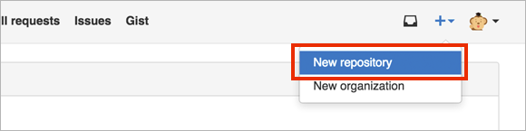
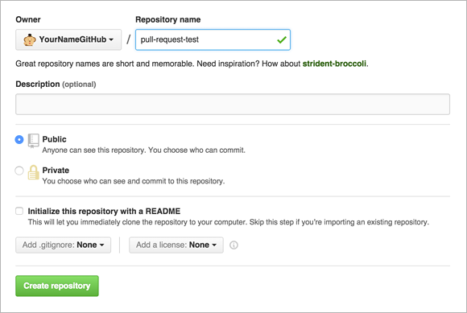

教學 來使用Pull Request吧
準備範例數據庫
那麼，接下來就讓我們實際體驗一下Pull Request吧。作為Pull Request的題材，我們要在一個只有準備好JavaScript陣列的原始碼中，加入對列表內容進行排序的處理。
我們準備了Backlog和GitHub兩種操作步驟，請選擇您喜歡的方式。
GitHub篇
首先，在GitHub上建立一個用來體驗Pull Request的數據庫。前往https://github.com/ 登入後，點擊右上方的加號按鈕，再點擊「New repository」。

在下方的畫面中，於 Repository name 輸入適當的名稱，然後點擊「Create repository」。

在數據庫中建立如下的js檔案。
sort.jsvar number = [19, 3, 81, 1, 24, 21];
console.log(number);
完成到這裡之後，就Push到遠端分支吧。